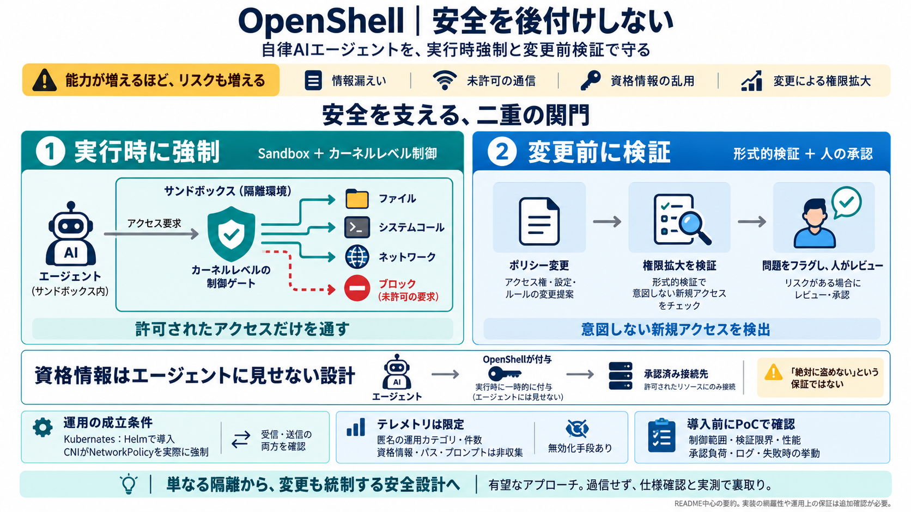

GitHub - NVIDIA/OpenShell: OpenShell is the safe, private runtime for autonomous AI agents. · GitHub
Sandboxes: images, runtimes, GPUs, and lifecycle. Policies: filesystem, network, and process rules, with the advisor an…

Sandboxes: images, runtimes, GPUs, and lifecycle. Policies: filesystem, network, and process rules, with the advisor an…
Your cluster MUST use a CNI that enforces Kubernetes `NetworkPolicy` for both ingress and egress in every sandbox namesp…
NVIDIA OpenShell is an open-source secure runtime for autonomous AI agents announced at GTC 2026. It runs a K3s Kubernet…
OpenShell is worth evaluating when the requirement combines agent lifecycle management, policy, provider credentials, an…
A Kubernetes cluster whose CNI enforces ingress and egress `NetworkPolicy`. Kind’s default CNI does not enforce NetworkP…